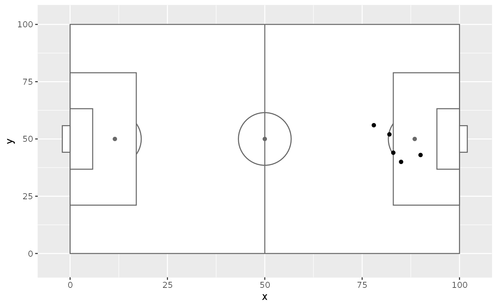

R/annotate_pitch.R
annotate_pitch.RdAdds soccer pitch markings as a layer for use in a ggplot plot.
annotate_pitch(
colour = "dimgray",
fill = "white",
limits = TRUE,
dimensions = pitch_opta,
goals = goals_box,
linewidth = 0.5,
alpha = 1,
linetype = "solid"
)Colour of pitch outline.
Colour of pitch fill.
Whether to adjust the plot limits to display the whole pitch.
A list containing the pitch dimensions to draw. See help(pitch_opta).
A function for generating goal markings. Defaults to goals_box.
See help(goals_box). Formulas are turned into functions with rlang::as_function.
The linewidth of the pitch markings
The transparency of the pitch markings and fill
The linetype of the pitch markings (e.g. "dotted")
list of ggplot geoms to be added to a ggplot plot
library(ggplot2)
shots_data <- data.frame(x = c(90, 85, 82, 78, 83),
y = c(43, 40, 52, 56, 44))
ggplot(shots_data, aes(x = x, y = y)) +
annotate_pitch() +
geom_point()
